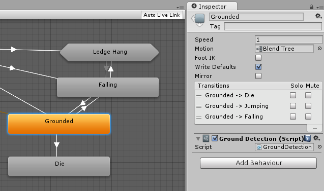

State Machine Behaviours
A State Machine Behaviour is a special class of script. In a similar way to attaching regular Unity scripts (MonoBehaviours) to individual GameObjects, you can attach a StateMachineBehaviour script to an individual state within a state machine. This allows you to write code that will execute when the state machine enters, exits or remains within a particular state. This means you do not have to write your own logic to test for and detect changes in state.
A few examples for the use of this feature might be to:
- Play sounds as states are entered or exited
- Perform certain tests (eg, ground detection) only when in appropriate states
- Activate and control special effects associated with specific states
State Machine Behaviours can be created and added to states in a very similar way to the way you would create and add scripts to GameObjects. Select a state in your state machine, and then in the inspector use the "Add Behaviour" button to select an existing StateMachineBehaviour or create a new one.

State Machine Behaviour scripts have access to a number of events that are called when the Animator enters, updates and exits different states (or sub-state machines). There are also events which allow you to handle the Root motion and Inverse Kinematics calls.
For more information see the State Machine Behaviour script reference.